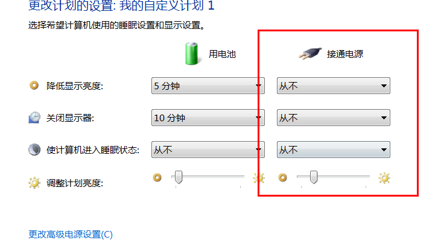

win7系统电源选项设置为从不也没用，还是会在一定条件下自动休眠并且断网。

解决办法
在启动目录里放一个
a.hta文件，功能为隔一段时间移动一次自己的窗体位置<HTA:APPLICATION SHOWINTASKBAR = "no" /> <script> moveTo(-999, -999) setInterval(function(){ moveTo(100, 200) moveTo(-999, -999) }, 1e3*60*60*1) </script>
相关文档
暂无
随便看看
畅言模块加载中